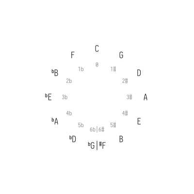
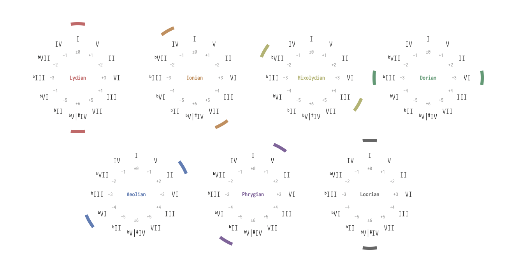

The personal blog of @megakite.
五度圈与现代音阶之关系和各布鲁斯音阶之推导
Oct 13, 2018.

我们知道，目前最为常用的现代音阶有七个。若按照音阶中降号数量升序——或即依「亮度」由明至暗排列，它们分别如下图所示：
如果写在钢琴卷帘上，尝试观察升降号变化规律的话，可以发现一些细节：
能够看到，由明至暗的各音阶升降号，是以上行四度/下行五度的动作在变化。
本文主要研究的课题便是五度圈与各现代音阶的关系，以及如何使用五度圈推断「现代五声音阶」与「现代布鲁斯音阶」。
一、最基本的关系
首先来看五度圈。
我们知道，C Ionian的各构成音分别是C D E F G A B。若在五度圈上将这些音进行标注，结果会是这样：

可以发现，这七个标注的音实际上组成了一个连续的半弧形，覆盖住五度圈的一半。
同理，若标注出C Aeolian的构成音，结果是：

实际上，C Aeolian的半弧可以看作是C Ionian向五度圈的上行四度/下行五度方向（逆时针）旋转了三个音而形成。
由此，我们可以推导出七个现代音阶各自在五度圈上的位置：

根据五度圈可以发现：从任意一个音阶的半弧开始，每逆时针旋转一步，半弧围住的音所代表的调号中，升号就会减少一个，同时降号增加一个。进行逆时针（上行四度/下行五度）旋转时，随着降号的增多，音阶会愈发晦暗；反之，若进行顺时针（上行五度/下行四度）旋转，则升号增多，给人的感觉就会逐渐变得明亮。
二、五声音阶的来历
1、纯五跨度
我们知道，五度圈中两相邻音之间音高相差完全五度。若设立一种表示各级音与主音之间相差「单位五度」数量的值，并规定：相对于主音，处于顺时针方向的音的值为正，处于逆时针的则为负，便是（相对于主音的）「纯五跨度」的概念。
各级音相对于主音的纯五跨度如下图所示：

与绝对音高五度圈相比较，可以发现各级音的纯五跨度在数值和符号上与绝对音高五度圈的升降号数目和类型一致。上一节中讲述的基本关系在此仍然适用。
2、上、下极点音
画出Phrygian的半弧：

可以看到，半弧的两侧分别包围住了该音阶中（相对于主音的）纯五跨度最大与最小的音：V级音与bII级音。
在音阶的各构成音之中，我们把纯五跨度最大者叫作「上极点音」，最小者叫作「下极点音」。于是可以知道，Phrygian的上极点音为V级音（+1），下极点音为bII级音（-5）。
其余现代音阶的上、下极点音如下图所示，推导方法相同。
3、「现代五声音阶」的推断
我们将大、小调五声音阶与它们各自对应的七声音阶放在五度圈上进行比较：

可以发现，大、小调五声音阶相对于Ionian、Aeolian七声音阶之间最大的差别就是被删去了（原七声音阶中的）上、下极点音。
按照这种思路，我们就应当可以对其余现代调式进行改动，推断出它们各自对应的五声音阶——但此时出现了一些情况：

能够看到，Lydian和Locrian两个音阶的上、下极点音中分别各有一个作为音阶的根音，若将其删去则无法构成音阶。于是，Lydian和Locrian理论上没有对应的五声音阶。
剩余的五个现代调式各自对应的五声音阶如下图所示：

至此，我们就完成了对所有「现代五声音阶」的推导。
三、布鲁斯
常用的布鲁斯音阶有两个，分别是大调布鲁斯音阶和小调布鲁斯音阶，它们在钢琴卷帘上像是这样：
本质上，大、小调布鲁斯音阶均可以看作是在大、小调五声音阶的基础上增加了一个「Blue Note」而形成。对于大调布鲁斯音阶，Blue Note是bIII级音；对于小调则是bV级音。
同样地，我们把大、小调布鲁斯音阶在五度圈上标记出来，并着重指出Blue Note的位置：

不难看出，Blue Note其实就是以（原五声音阶的）下极点音为起点再逆时针旋转三个音而得到——这也解释了Blue Note为何令人「Feel blue」。
由此，我们就可以推导出五个「现代五声音阶」加上Blue Note之后形成的各「现代布鲁斯音阶」：

理论上虽是如此，不过仔细观察可以发现，Phrygian Blues的Blue Note实际上是bC而非B。所以严格上来说，Phrygian Blues也是不成立的——
不过我们之前已经把两位五声音阶判了失格……这次的Blues，干脆就留着好了！
四、思考
1、本文所介绍的「现代五声音阶」与「现代布鲁斯音阶」之推导方法事实上较为不常见。在实际情况中，乐手们更有可能会使用下列各音阶进行演奏：
这些音阶在构建时使用了怎样的思路？与本文所阐述的有何差别？
2、一个布鲁斯音阶中总共有六个音。若按照固定调的思考方式，除了上文介绍到的五种以外，还有一种事实存在的音阶：
思考此音阶的构建过程和特点。
3、封面讲了些啥？
# EOF.
megakite214g@gmail.com / megakite214@hotmail.com
Still under development!